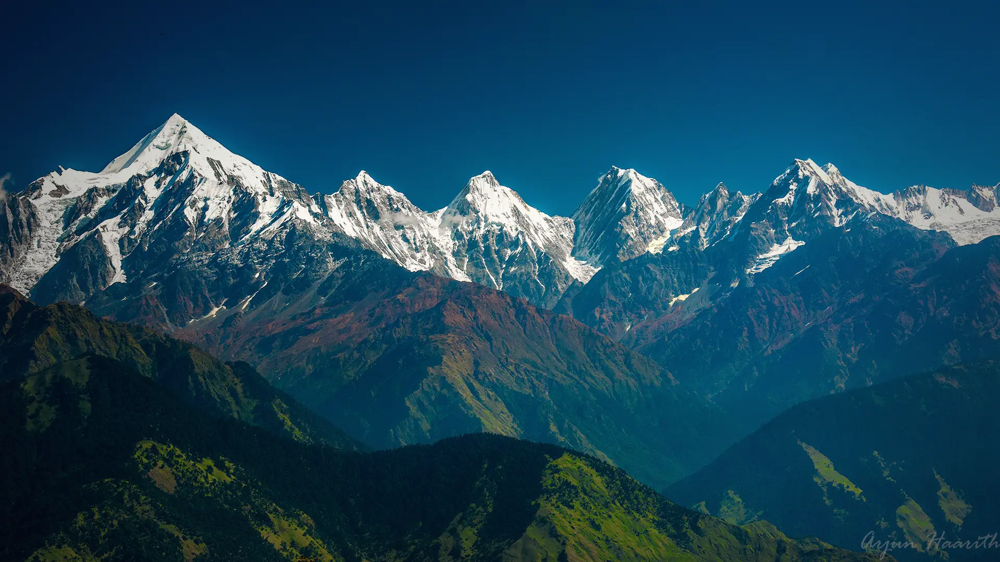
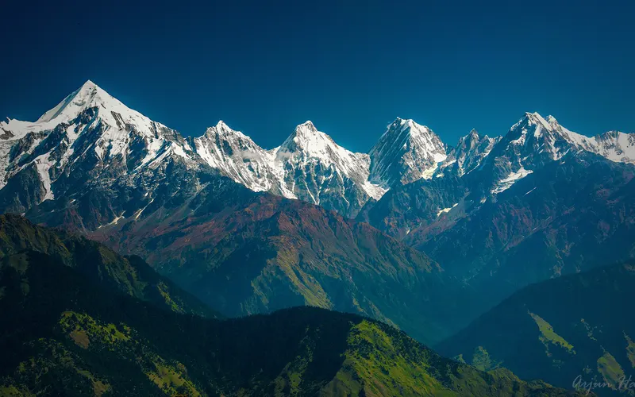
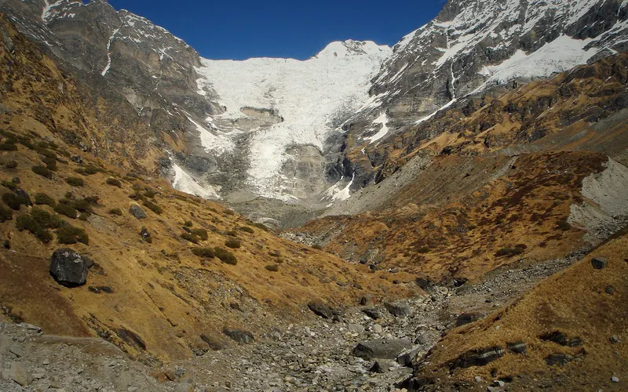
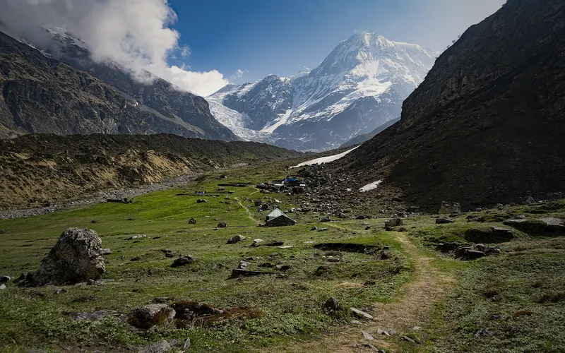
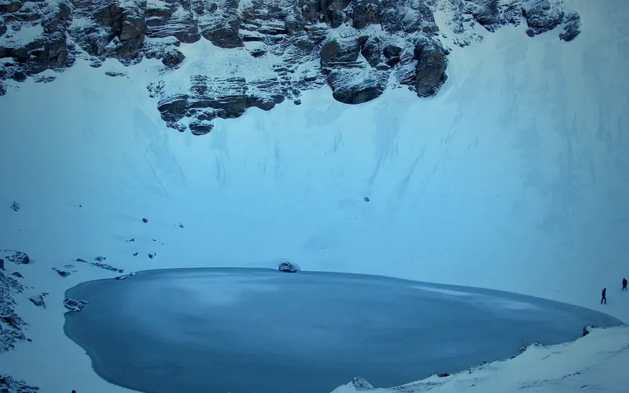
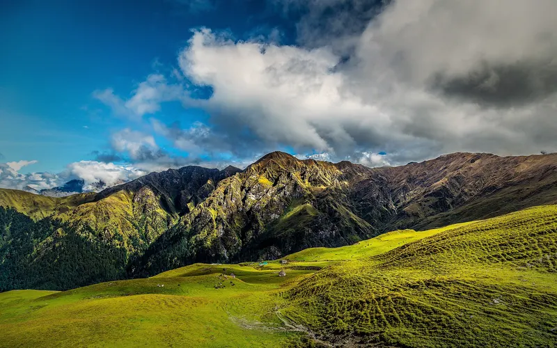

02Day 2 · Dar · 2,134 mkm 0.1
Into the Darma
~6hDharchula to Dugtu · By jeep, today
From Dharchula a rough road climbs via Tawaghat and Sobla into the Darma valley. Dar is where the classic walk-in began.

Photo: Arjunhaarith16, CC BY-SA 4.0पंचाचूली बेस कैंप · Pithoragarh, Uttarakhand
The trek in one line, and what you can do with it.
A road now reaches Dugtu, so the trek itself is short. The valley around it is the real journey.
4 stops on the map, then the climb. Scroll the stops and the map follows.
02Day 2 · Dar · 2,134 mkm 0.1
~6hDharchula to Dugtu · By jeep, today
From Dharchula a rough road climbs via Tawaghat and Sobla into the Darma valley. Dar is where the classic walk-in began.
02Day 2 · Selakm 11.6
ITBPCheckposts · At Sela and Baling
On foot, the stretch between Dar and Sela is narrow and exposed.
02Day 2 · Balingkm 21.9
~5monthsSnowbound · A year
The Darma valley is snowbound for about five months a year. Villagers like those of Baling move down with their livestock each winter.
02Day 2 · Dantu · facing Panchachulikm 28.9
4–5kmTo base camp · Day 3, not mapped
From Dugtu and Dantu the five peaks of Panchachuli fill the west. Day 3 walks 4–5 km to the base camp, where KMVN built igloo-style huts in 2021.
Best in May–Jun, Oct.
Dark: the months the trek’s sources call its best. Mid: possible. See all treks in May.

Photo: Arjunhaarith16, CC BY-SA 4.0
Base prices from 6 operators’ own pages, per person. GST and travel are often extra. Treqz sells nothing.
₹14,500–30,000
The practical things, then the questions people ask.
One thing from each part of the packing list, so nothing big is missed. The full list, with where to rent and the daily rates, is on the 3D page.
The full packing list →


No ATM beyond Dharchula, and no UPI or cards in the valley. Draw cash in Dharchula.
Discover with DheerajOnly BSNL works, on and off, near the road. Jio and Airtel don't work. Expect no signal past Sobla.
Discover with DheerajDantu has phone charging, but its solar power is limited. Carry a power bank.
Super TrekkersStreams are plentiful, but purify before you drink. Carry purification tablets.
Discover with DheerajDharchula is the last market. You won't find supplies on the trek. Budget ₹300–500 a day for food.
Discover with DheerajMay–June: days 10 to 20 °C, nights 0 to 5 °C at high camps. Sep–Oct: days 5 to 15 °C, nights well below zero at base camp.
Discover with DheerajAbout 28.9 km of walking over 6 days on the trail.
The highest point is , about 1,210 m above the start.
Its sources grade it Easy–moderate.
May–Jun, Oct. It is also possible in Sep.
₹14,500 to ₹30,000 per person: base prices from 6 operators' own pages. GST and travel are often extra.
Only BSNL works, on and off, near the road. Jio and Airtel don't work. Expect no signal past Sobla.
No ATM beyond Dharchula, and no UPI or cards in the valley. Draw cash in Dharchula.
Thermal inners, Full-sleeve non-cotton tops, Fleece jacket, Down or hollofil jacket, Wind- and waterproof jacket and pants, Trek pants, Gloves: waterproof and woollen, Woollen cap and neck gaiter. The full list is on the 3D page.
Its sources do not list December to February as a trekking season.
Its sources grade it Easy–moderate and it takes 6 days on the trail, with a highest point of .
Kafni Glacier, Pindari Glacier, Roopkund, Ali–Bedni Bugyal, Brahmatal.





Treks in May · Treks in June · Treks in October · Treks in Uttarakhand · Beginner Treks in Uttarakhand · Easy Treks in India for Beginners · 6 Day Treks in India · Panchachuli Base vs Kafni Glacier · Panchachuli Base vs Pindari Glacier · Panchachuli Base vs Roopkund · Free trek finder · All treks in 3D